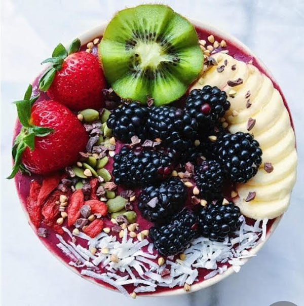

Vegan Acai Bowl
Ideas to make eating right AND being on time possible!
Ingredients:
Smoothie
- 2 1/4 cups frozen
- 1 1/4 cups frozen raspberries and/or strawberries (I mixed both)
- 1 cup light coconut milk or unsweetened almond milk
- 1 medium lime, juiced (3 tbsp or 45 ml as original recipe is written)
- 2 tbsp fresh ginger
- 1 tbsp unsweetened shredded coconut
- 1/8 scant tsp cayenne pepper (optional)
- 1-2 Tbsp protein powder of choice or hemp seeds (optional)
For Serving (optional):
- coconut yogurt or coconut milk
- berries
- unsweetened shredded coconut
- hemp seeds
Instructions:
- In a high-speed blender add mango, berries, coconut or almond milk,lime, ginger, shredded coconut, cayenne pepper (optional), and protein powder of choice (optional).
- Blend on high until creamy and smooth, scraping down sides as needed. If it has trouble blending add more coconut, almond milk, or water.
- Serve as is or layer with coconut yogurt or milk and top with desired toppings. I preffer berries, hemp seeds,and coconut flake.
- Enjoy fresh or refrigerate leftovers for 3 days.Or store in the freezer (as popsicles) up to 1 month.
Nutrition Per Serving:
- Calories:376
- Fat:10.2g
- Saturated fat:7.7g
- Sodium:39mg
- Carbs:76g
- Fiber:13.8g
- Sugar:51.5g
- Protein:6.6g